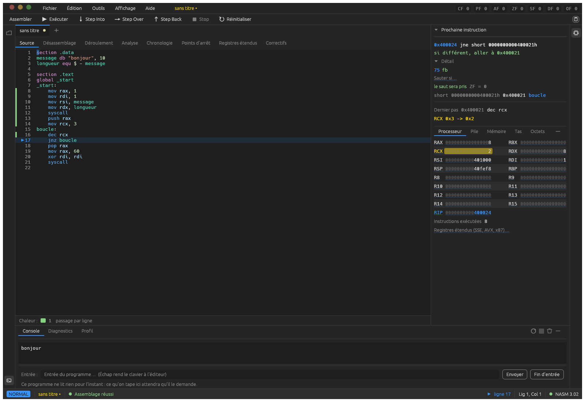
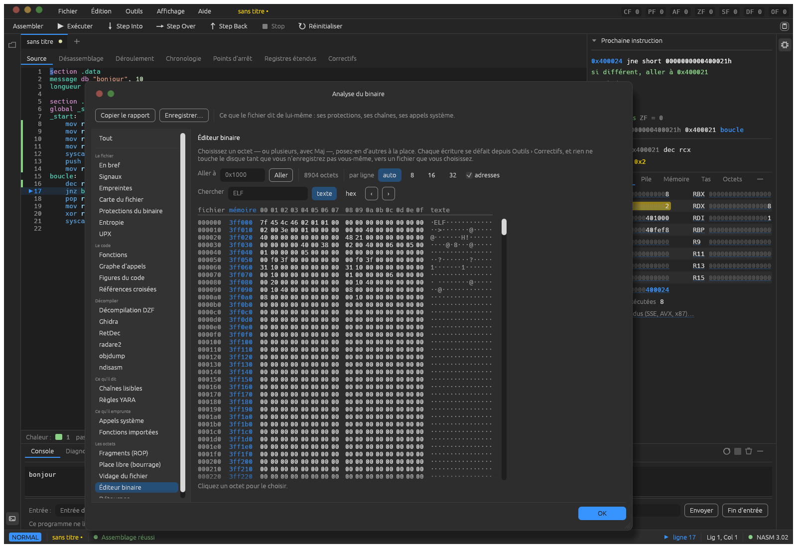

namsdec
A workbench for learning x86-64 NASM assembly — and for reading the binaries other people wrote.
It runs your program one instruction at a time and tells you, at every step, what the machine is about to do and what it just did. It does not merely display registers: it explains. Linux, ELF64, NASM syntax. MIT licensed.
A note on the screenshots below: they are taken in French, the language the workbench was written in first. The program itself is fully bilingual — every word you see in them exists in English too, and the language is chosen in Preferences ▸ General. The exercises, the 193 documentation cards and the theory of each exercise are written in both languages.

What it shows that the others do not
The next instruction, resolved
mov al, [rsi + rcx*4 + 8] does not tell you where that
points. namsdec works it out before execution: the effective address, its label
in your own source, and the byte sitting there.
The last step, with the value from before
RCX 0x5 → 0x4 under the dec rcx that did it, and the
flags it changed beside it. After a cmp, the flags are the
result.
The jump, before it goes
"The jump will be taken", the rule it follows (CF = 0 and ZF = 0),
and whether the comparison reads its numbers as signed. ja and
jg both say "greater" and answer the opposite.
The system call written out
syscall carries no operand at all — everything is in the
registers. namsdec writes it the way you would write it in C.
write(fd = 0x1, buf = 0x402000 → "hello\n", count = 0x6)Learning
Predict before you step. Saying what the next instruction does before you press the key is handing over the answer before the question: you never get the chance to be wrong — and being wrong is the only way to find out you had not understood. In beginner mode the answer waits for the step.
Next instruction
0x400005 mov ebx, 2
What is this going to change? [Show]
Last step 0x400000 mov eax, 1
What it said: EAX = 1
RAX 0x0 -> 0x1One hundred and thirty-eight exercises ship with the program, in
four levels: Discovery, Practice, Structures, Mastery. Each carries its own theory
card — not the brief, not the hint: the mechanism it rests on, with a worked example
taken from its own program. One hundred and twelve carry a checkable goal
(rax == 0xf), and each one an instruction budget: matching it is
normal, going below is the real exercise.

rcx == 0), and what the registers hold at that particular
pass.
Reading other people's binaries
The same workbench opens an ELF you did not write, and says what it knows of it: its armour, what it borrows, what it hides, and where to start reading. Nothing is added up into a score — a score would look like a verdict, and it is the reader who concludes.



call aims at
is a function, even stripped of its name; the one called from everywhere is the
one to start from.And without the window. namsdec-cli writes the same
report as Markdown, and compares two versions of a binary — a protection that
disappears, a string that appears. A byte diff would say "the file
changed at offset 0x15604", which teaches nothing.
namsdec-cli program.v2 --contre program.v1 -s protections \
|| echo "a protection moved"Installing
You need Rust (cargo), nasm and
ld (binutils). Nothing is written outside $HOME, and
nothing asks for administrator rights.
git clone https://github.com/fredza/namsdec.git
cd namsdec
./install.shRunning the script again is an update, not a reinstall: your settings, your exercise packs and your breakpoints stay where they are. The PDF guide covers all of this in detail, and it is produced from the repository — the version, the number of exercises and the shortcut table come from the sources, never from a copy that would age.